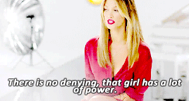
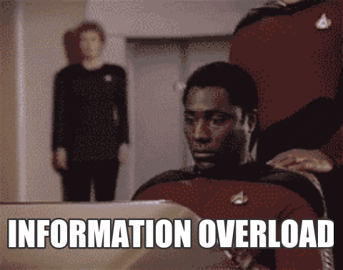
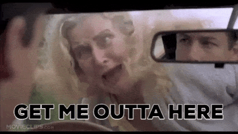
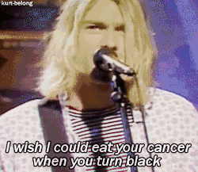
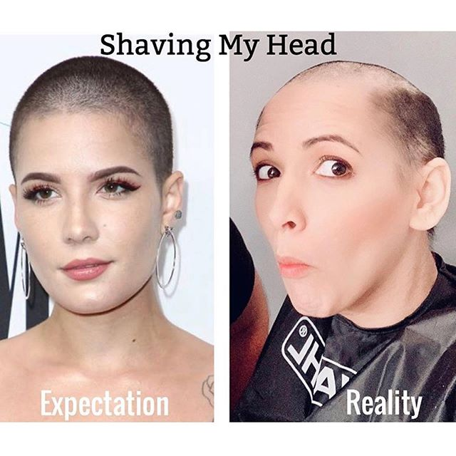
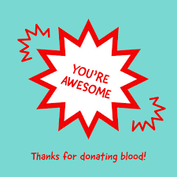
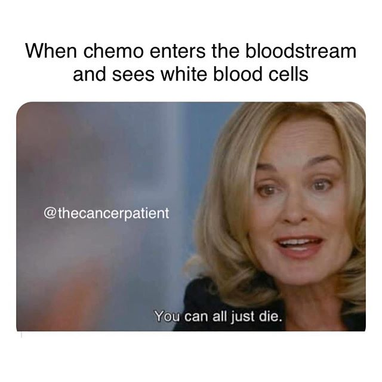
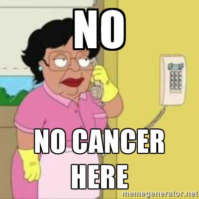
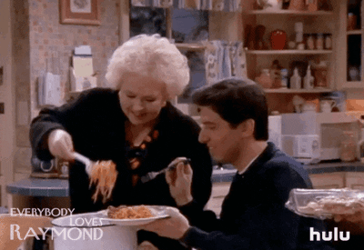
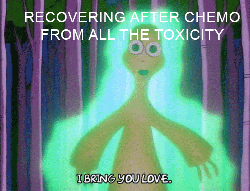

I'm not sick but i'm not well
My journey with Hodgkin Lymphoma
Dec 2020
I’m 31-years-old and I have been diagnosed Hodgkin Lymphoma (yes, the same one as Delta Goodrem had).

I don’t drink, I don’t smoke and I eat relatively well (I eat a bit of everything).
So how does someone that feels “healthy and normal” discover that they have cancer?
The discovery:
So my story begins, at the beginning of the year my skin was itchy and I thought it must just be allergies or perhaps a reaction to ‘the pill’ I’ve been taking. The doctor thought the same so gave me some cream to try, but the only thing that helped was antihistamine hay fever tablets and clove oil (clove oil is useful to have around by the way).
Then in April, I then discovered a small lump (half the size of a golf ball) on my left neck / collarbone area. It wasn’t sore at all and I felt well. I heard that cancer lumps are not necessarily painful, and you don’t always feel sick unless it’s at an advanced stage. Therefore, I knew I had to take the lump seriously, but I ‘realistically’ thought I had injured my collarbone playing golf or something (wishful thinking I guess).

As I was at the doctors following up on my itchy skin, I also mentioned my lump. She explained to me that back lumps are normally superficial but mine is at the front and worth getting an ultrasound and a blood test. The doctor mentioned it could be a cancer or perhaps some sort of other immune disease.
The diagnoses:
This marked the beginning of a lengthy diagnoses. Blood test results showed up all healthy and at normal ranges (lymphoma cannot be detected by blood), ultrasound showed a few small clusters of lumps. Next steps were to undergo a CT scan to provide more detailed information. The CT scan showed clusters on the neck and some around my chest. I never get used to tunnel scans, I close my eyes and pretend that I’m on a beach tanning.
I never get use to tunnel scans, I close my eyes and pretend that I’m on a beach tanning.
I was then referred to the Peter Mac Cancer Centre and of course I knew I was in the best hands. At this stage I still felt like I had a 50/50 chance of this not being cancer. The physician explained to me that’s there’s no way of telling for sure until we can an accurate biopsy. He explained to me given the results of the CT scan it could be a stage 2 Lymphoma of some sort as it’s all contained in the upper region and that the itchy skin could be a sign of lymphoma (surprise)! He also mentioned the possibility of Sarcoidosis – another serious immune condition.
Throughout the weeks ahead I underwent numerous checks (and to help rule out other cancers) – nasal and throat assessment, mammogram, ultrasound on thyroid, fine needle biopsy (unable to determent results), a PET scan and the finally a core biopsy.
Getting the core biopsy was a rather intense experience (but less painful than the dentist in my experience). The doctor took longer than expected as he had to craft his way around my artery and was selective with the sample of tissue taken. I’m glad they had the radio on as it was a great distraction listening to Blondie and talking to the doctor and nurses.
Finally came 21 July and I was given the results of the core biopsy and they were able to confirm that I indeed had Lymphoma. The next day I saw the Haematologist and he was able to inform me of the exact diagnosis
–‘Classical Hodgkin lymphoma stage 2, type A, unfavourable’.
Even though I knew the outcome would most likely lead to this, it was only until I got this confirmation it then hit me. For four days straight I was shaking and I knew that I needed to process my emotions in order to get into a better mind frame. I wanted to hide away and ideally would’ve loved a small getaway before treatment started – but you know COVID times. I had a lot of good support around me – even though it was somewhat a bit eery to receive ‘get well’ gifts while feeling ‘well’ – it really did help feeling loved and supported by ones that mean the most to me.
Treatment planning:
The Haematologist explained the different treatment pathways, and in particular two:
- [ABVD] 6 months of treatment
- with a 90% success rate, a less aggressive treatment (slight chance of radiotherapy) - [BEACOPP & ABVD] 14 weeks short aggressive
- treatment 95% success rate (less chance of radiotherapy).
Both good choices but ideally best to avoid radiation around main organs such as my lungs and heart.
At first, I thought the less aggressive treatment would be best as I wanted to be at less risk of infections, but at the same time I liked the idea of being able to complete the treatment before the end of year. Either way I was happy for the group of doctors to have their meeting to discuss my case and get back to me about their opinion.
– The nurse was also there to give me more information and her contact.

I was also given the option of some fertility care – freezing the eggs or an injection to put the ovaries to sleep. I did opt-in for the injection to stop my menstrual cycle and to help avoid early menopause (but nothing is guaranteed).
The nurse also put me onto the Lymphoma Down Under Facebook community page that has been a massive help.
A week later I got my treatment recommendation to go ahead with 2 rounds of BEACOPP & 2 rounds of ABVD (aggressive but shorter option). I was happy and had complete faith with the doctors recommendations.
At least I have a shorter treatment to allow me to recover quicker. I had to wait just under 3 weeks to begin treatment.
During this time, I could focus on my health, I had a lot of great recommendations from family and friends and some of them who had gone through their own battle with cancer.
See Recommendations ↓
Treatment:
- 2 cycles of BEACOPP. (At the end of second cycle the objective is to have a clear PET scan).
- And 2 cycles of ABVD (if scan is all clear).
- B(Bleomycin)
- E(Etoposide)
- A(Adriamycin, Doxorubicin)
- C(Cyclophosphamide)
- O(Oncovin, Vincristine)
- P(Procarbazine)
- P(Prednisone)
- A(Adriamycin)
- B(Bleomycin)
- V(Vinblastine)
- D(Dacarbazine )
Cycle 1 - (21 days)
I tolerated relativity well despite a few notable issues such as feeling like ‘jetlagged’, dry throat, blurry in the eyes and weakness on some days. I ate well throughout though. Some days were difficult to last long periods on the computer for work, so I just had to take it easy. Some days I had brain-fog and had a few ‘brain-fart’ moments, for example I was in the kitchen and couldn’t think of the word for ‘dish rack’, I woke up in the middle of the night and the word pop right in!
-
Day 1-3
Chemo chair injection drip. 💺 - (Itchy stopped right away!)
-
Day 8
Chemo chair injection drip. 💺
-
Day 9
Booster injection.
-
Day 10-12
This was my low week and ended up in emergency as I had a high temperature and was neutropenia (no white blood cells). My hospital stay was a nightmare for me 😅 - I was missed placed, left with an awkward injection port for days, medication was delayed...(just to say the least).

I was given the mandatory COVID test. I find it ludicrous that cancer patients are forced into a COVID ward. It was mentally exhausting being kept in isolation – I’m sure the nurses thought I was losing it as I ate lunch and sang to my music.
 -
Day 12
The hair loss begin! Most of my hair all fall out in the shower. I found olive oil helped the dead hair before cutting and shaving it all off at Peter Mac.

-
Day 18
I attended the ‘Look Good Feel Better’ workshop via zoom. 🥰 The workshop covered ‘Wigs and Headwear’ and ‘Skincare and Make-Up’.
Cycle 2 - (21 days)
My second cycle of my treatment was fairly similar to the first, but worse with dizziness and other side effects.
-
Day 1-3
Chemo chair injection drip. 💺
-
Day 8
Chemo chair injection drip. 💺
-
Day 9
Booster injection.
Had a blood transfusion due to low haemoglobin (red blood oxygen).
 -
Day 12-15
Went into emergency again, though this time I was more prepared and got my injection port put in my top wrist instead.
I also had a blood transfusion for platelets. – I had no idea that the colour for this transfusion would be yellow 😮. My aches were also worse this time around and one day couldn’t barley walk or stand.

-
Day 19
Had my PET scan check-in. Result was clear – In remission! 🎉🎉🎉

Cycle 3 - (28 days)
I had my lungs tested at this stage and results showed a decrease in my lung function due to toxicity. Therefore, the bleomycin drug was removed from my treatment.
The doctor also changed the booster injection to a more frequent injection that’s more quicker realising but short lived.
This approach makes the white blood cells come back quicker and helps avoid going into emergency.
Cycle 4 - (28 days)
Side effects got worse as cycles went along - taste buds, pins and needles in hand, inflamed throat… and during my low week, dizzy, tiredness, brain fog and shortness of breath. My eyelashes started to thin out at this stage.
Summary:
Earlier this year I lost my job (one that I enjoyed) and I was luckily enough to get a new job soon after. Starting a new job in lockdown was already strange enough, then having to undergo cancer was whole other level. A lot of people stop working during treatment and even find it difficult going back. For me I was fortunate enough to have a very supportive workplace that offers flexibility, so I was able to manage. Working from home made it a lot easier – especially with all the medical and medication regimes. Although challenging, I was lucky with the support I had around me. My wife was able to get everything in order while working fulltime and I had family dropping me off meals as well.

Despite the unfortunate events that had occurred, I had weird luck also (going through all this while everyone had to isolate too) it always helps focusing on the smalls wins – I’m so grateful that I was taken good care of at Peter Mac and all the medical staff are complete rockstars.
Doctors aren't too sure what causes Lymphoma. However, exposure to radiation and certain types of chemicals can put some people at higher risk and those whose immune system is suppressed, exposure to viruses such as the Epstein-Barr virus (glandular fever) or HIV.
Lymphoma is a cancer of the immune system, the 6th most common cancer in Australia and the number one cancer in the 15-29 year age group.
Recovering is always different for people. Most people get better between 6 months and 2 years after finishing treatment. However, about a third of people have symptoms that last longer, sometimes for many years.

As I recover, I will continue taking daily medication for at least 3-6 months until my immune picks up and I will focus on getting my strength back. My goal is to be fit enough to ride a bike, play tennis and golf. I will remain positive but will live with a natural fear of having a relapse (studies show that relapses occur within 5 years).
For now, I look forward to recovery – I will make myself a kickass music playlist and get my fitness on! … I might even give myself some ridiculous hairdos along the way as my hair grows back.